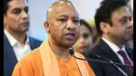

On his first day of campaigning, Adityanath will address three election rallies in Morbi, Bharooch and Surat in Gujarat, the home state of Prime Minister Narendra Modi.
LUCKNOW Chief minister Yogi Adityanath will on Friday begin campaigning for BJP candidates in Gujarat assembly elections, voting for which would be held on December 1 and 5.
On his first day of campaigning, Adityanath will address three election rallies in Morbi, Bharooch and Surat in Gujarat, the home state of Prime Minister Narendra Modi, stated a press release.
The CM will also be campaigning in bypolls to Mainpuri Lok Sabha and Rampur and Khatauli (Muzaffarnagar) assembly seats. The by-election to Mainpuri Lok Sabha seat was necessitated by the death of Samajwadi Party patriarch Mulayam Singh Yadav while the by-election to the Rampur seat was necessitated following disqualification of Samajwadi Party leader and MLA Azam Khan.